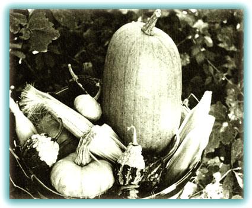
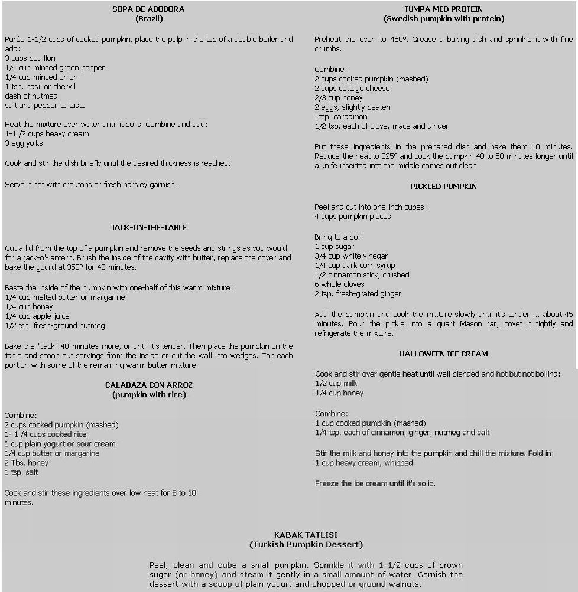

We may well have had the smallest pumpkin patch in Quebec last fall ... but even so, its productivity overwhelmed us. We'd never grown the crop before and hadn't expected the ines to proliferate so generously.
We were pleased with our success but at the same time in a quandary as to what could be done with our healthy harvest. How were two stomachs going to dispose of 21 "symbols of harvest" before the first frost? Making one jack-o'-lantern and giving three pumpkins to each of our two neighbors still left us with 14 offspring ... not enough to set up a stall in the market, but far too many to convert into pies.
To the rescue (for the thousand-and-first time) our French neighbor! ... who informed us that in the old country pumpkins are used to create delicate soufflés, hearty soups, intriguing main or side dishes and an endless variety of desserts. Sure enough. With just a little effort, we soon found more pumpkin recipes from all over the world than we were able to try with only 14 of the delicious gourds.
Pumpkin is as rich in its challenge to creative cooks as it is in vitamin A. Being rather bland, the pulp lends itself beautifully to stuffings, spice mixtures and imaginative combinations. One pound serves two people generously.
To steam pumpkin, clean and peel the fruit and cut it into small pieces. Cook the chunks in a covered pan, along with a small amount of water, until they're tender ... 25-35 minutes. Serve the dish with butter and a dash of nutmeg, or mashed in place of potatoes.
To bake one of the gourds, slice it in half or cut a lid from its top, and clean out the inner seeds and pulp. Brush the inside with butter and sprinkle it with brown sugar or pumpkin spices. Set the golden globe in a 350° oven until it's tender ... about an hour if the fruit is whole, less if it's cut in small pieces.
Pumpkins can be used interchangeably in recipes which call for winter squash. Here are just a few of the many other possible ways to prepare this truly international comestible (all recipes serve six):
|
 |
 |
|